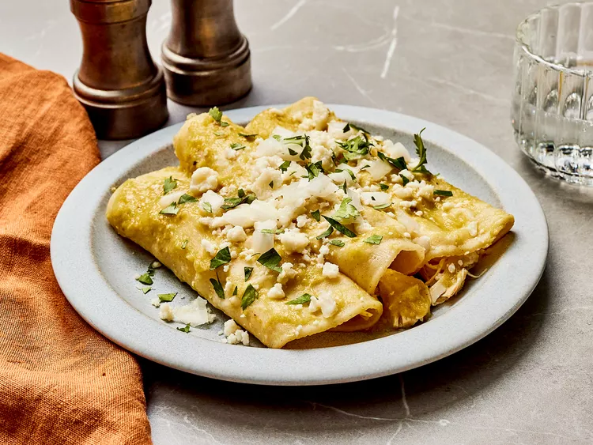

Authentic Enchiladas Verdes

Description
This authentic chicken enchilada recipe is made with fresh green salsa, just like you would find in a Mexican restaurant or better yet, in a Mexican home.
Ingredients
- 2 bone-in chicken breast halves
- 2 cups chicken broth
- ½ white onion, halved, divided
- 2 teaspoons salt
- 2 cloves garlic, divided
- 1 pound fresh tomatillos, husks removed
- 5 serrano peppers, or to taste
- 1 pinch salt
- ¼ cup vegetable oil
- 12 corn tortillas
- 1 cup crumbled queso fresco
- ½ white onion, chopped
- 1 bunch fresh cilantro, chopped
Directions
Step 1
- Gather the ingredients.
Step 2
- Combine chicken, broth, one quarter onion, salt, and 1 clove garlic in a medium saucepan; bring to a boil. Cook until chicken is no longer pink in the center and the juices run clear, about 20 minutes. An instant-read thermometer inserted into the center should read at least 165 degrees F (74 degrees C).
Step 3
- Remove chicken to a large bowl to cool. Reserve broth; discard onion and garlic.
Step 4
- When cool enough to handle, shred chicken with your hands.
Step 5
- Place tomatillos and serrano peppers in a medium pot and cover with water.
Step 6
- Bring to a boil and cook until tomatillos turn from bright green to dull, army green.
Step 7
- Strain tomatillos and peppers and place in a blender. Add remaining one quarter onion, remaining 1 clove garlic, and a pinch of salt. Pour in enough reserved broth to cover vegetables in the blender by about 1 inch.
Step 8
- Blend until completely puréed.
Step 9
- Pour salsa into a medium saucepan and bring to a low boil.
Step 10
- Heat oil in a small frying pan over medium-high heat until very hot. Lightly fry tortillas, one at time, in hot oil. Remove to paper towels to drain.
Step 11
- Dip tortillas in low-boiling salsa until they become soft again. Place onto plates, 3 per person.
Step 12
- Fill or cover tortillas with shredded chicken, then top with salsa.
Step 13
- Sprinkle with queso fresco, onion, and cilantro.